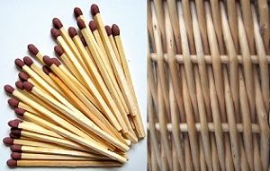
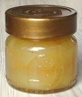

|
| Wie wird die Silberweide genutzt?
Aus dem weichen, leichten Holz werden Streichhölzer und Spankörbe hergestellt.
Die Zweige werden zum Flechten von Körben verwendet.
 | 
Der Nektar wird von Bienen gesammelt und zu Honig verarbeitet. Die Silberweidenblüten gehören zu den ersten Blüten, die im Frühjahr von Bienen besucht werden. Sie sind eine wichtige Bienenweide. |